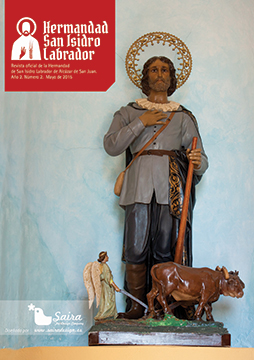

Breve historia agrícola y ganaderaAutor: Jaime Gallego MonederoAlcázar en el tiempo (1ª parte) La agricultura y la ganadería ya son representativas en Alcázar desde la Edad del Bronce. Su representatividad queda definida en las motillas localizadas en el término municipal en el año 1963. Una agricultura basada en trigo, escanda, cebada, guisantes, lentejas y chícharos, y una ganadería de pequeños rumiantes, bóvidos, caballos, cerdos y perros. Una agricultura y ganadería de subsistencia que mejorará en la época romana con la roturación de nuevos terrenos. Hasta la llegada de los árabes, toda la agricultura será de secano. Con éstos llegará la noria y las huertas. Huertas que estarán próximas a la población y que se mantendrán hasta bien entrado el siglo XX. También se instalarán los molinos de cereal en los cauces de los ríos. De esto queda constancia en la carta de donación que hizo Alfonso VIII a la Orden de San Juan en 1183: “…Os doy y concedo el Castillo que llaman Consuegra, en frontera de moros y cerca de Toledo, todo integro, con sus entradas y salidas, con sus pechos, con sus prados y yermos, con tierras, viñas y huertas, con sus pastos, aguas, ríos, molinos y con sus portazgos y minas que se hallaren en su término, con sus montes, fuentes y bosques y con sus dehesas y todas sus pertenencias, por derecho hereditario y para que lo posean libre, perpetua e irrevocablemente…” En octubre de 1241, D. Rodrigo Pérez da carta de población a 362 pobladores para avecindarse en Alcázar, concediéndoles el Fuero de Consuegra. Todas las cartas-puebla tienen en común su referencia a caballos o bueyes para las faenas agrícolas, lo que demuestra que los pobladores vienen con todas sus pertenencias. Tardará en rehacerse la población y, por supuesto, su medio agrícola y ganadero. La ganadería fue, desde el principio, protegida por los reyes. Ya en 1170 Alfonso VIII de Castilla tomó bajo su protección los rebaños de la Orden de San Juan. En 1250, el rey Fernando III estableció las tarifas que se cobraban a los ganados en los portazgos y montazgos. El gran comendador de la Orden del Hospital en España, Frey Fernando Rodríguez, comunicó al comendador de Consuegra, Frey Ruy Pérez, las nuevas tarifas: • dos vacas de cada mil u ocho maravedíes • dos carneros por cada mil ovejas o dos maravedíes por cabeza. • dos cerdos por cada mil o dos maravedíes por cada cerdo. En 1273, Alfonso X creó la Mesta, lo que dará una gran importancia a la ganadería frente a la agricultura. La industria textil daba más ingresos a la corona y los aranceles por portazgo y paso suponían una suma importante. Veamos un ejemplo: La crianza de caballos y mulas será una constante en el municipio pues el Concejo tenía dehesas y el rey, que necesitaba de caballos para su ejército, mandará acotar algunas de ellas para su cría. Así, en el Libro de acuerdos del Concejo de 1599 a 1609, folio 62, año 1601, sig. 1/1, reg. 6, nos dice sobre este tema: “En conformidad con la Pragmática de Su Majestad acerca de las yeguas y potros dijeron: Que señalaban y señalaron por dehesa para las dichas yeguas y potros desde la Fuente del Retamar hasta el lugar de Villaharta, término desta villa, lo cual mandaron se guarde por dehesa para el dicho efecto e que las guardas de este término e desta villa tengan cuidado de los guardar.” Cuando Alcázar pasa a ser capital del Priorato, el hecho de ser paso de ganado y cruce de caminos hará que se instale el comercio en ella. También traerá consigo el establecimiento de gente rica que hará aumentar las explotaciones ganaderas y agrícolas, incorporando la vid y el olivo. Las siembras de trigo y cebada en los márgenes de los ríos Gigüela y Záncara serán alimento para las grandes plagas de langosta que asolarán el campo un año tras otro. También las lluvias torrenciales y las crecidas de los ríos en primavera traerán desolación y hambre. Tan escasa producción dará lugar a un alza en los precios. En 1546 los precios del trigo y la cebada rondaban los 11 y los 9 reales la fanega, y el pan de los Maestrazgos se arrendó para dicho año con condición que, impuesta la tasa, no pudiera ser a menos de 240 maravedíes la fanega de trigo y a 120 la de cebada, y en los cuatro años siguientes no habían de bajar esas dos semillas de 8 y 4 reales, respectivamente. Sin embargo, las tierras eran fértiles hasta el punto de que Cosme de Médicis, cronista, las alabó diciendo: “En toda la Mancha se producen los mejores granos de España, tanto que de ellos únicamente se hace en Madrid el pan para el consumo del Rey…” |
 Revista San Isidro 2015  Revista San Isidro 2015 |
BREVE HISTORIA AGRÍCOLA Y GANADERA (2ª Parte)
En el Priorato de San Juan se tenía costumbre de prestar a los agricultores un tercio de los diezmos para la siembra.
En el Libro de Cuentas 1612-1628 folio 90 nos encontramos la siguiente reseña:
“Mas doce reales que pagó a Diego García de Siruela, vecino desta villa, ...
En el Priorato de San Juan se tenía costumbre de prestar a los agricultores un tercio de los diezmos para la siembra.
En el Libro de Cuentas 1612-1628 folio 90 nos encontramos la siguiente reseña:
“Mas doce reales que pagó a Diego García de Siruela, vecino desta villa, ...

EL HISTORIAL CAMPESINO
Fácil es señor doctor,
decir no bebas más vino
y que difícil que es
para el que nació campesino.
Yo que desde muy pequeño
dediqué mi vida entera
y en darle puse mi empeño,
rango, prestigio y solera..
Fácil es señor doctor,
decir no bebas más vino
y que difícil que es
para el que nació campesino.
Yo que desde muy pequeño
dediqué mi vida entera
y en darle puse mi empeño,
rango, prestigio y solera..
ALGUNOS MILAGROS DE SAN ISIDRO
No todos sabrán de la gran cantidad de milagros que se le atribuyen a San Isidro Labrador, muchos de ellos, post mortem. Cuatrocientos treinta y ocho milagros en total, de los cuales vamos a contar aquí los más conocidos.
No todos sabrán de la gran cantidad de milagros que se le atribuyen a San Isidro Labrador, muchos de ellos, post mortem. Cuatrocientos treinta y ocho milagros en total, de los cuales vamos a contar aquí los más conocidos.
SOLAMENTE HACE 50 AÑOS ...
Tuvo lugar una catástrofe climatológica en toda la zona de La Mancha. Un gran frente frío cruzó toda la Península dejando fuertes heladas y copiosas nevadas que hizo que durante varios días la nieve se quedara congelada sobre todos los cultivos de la zona.
En esos días, concretamente durante los días del 19 al 22 de Febrero de 1.965 ...
Tuvo lugar una catástrofe climatológica en toda la zona de La Mancha. Un gran frente frío cruzó toda la Península dejando fuertes heladas y copiosas nevadas que hizo que durante varios días la nieve se quedara congelada sobre todos los cultivos de la zona.
En esos días, concretamente durante los días del 19 al 22 de Febrero de 1.965 ...
Conoce el reglamento interno, los requisitos de acceso y pasa a formar parte de nuestra Hermandad.

| Teléfono: 683 122 794 Casa Parroquial de la Iglesia de San Francisco Plaza de San Francisco, s/n 13600 - Alcázar de San Juan (Ciudad Real) |
Síguenos en |